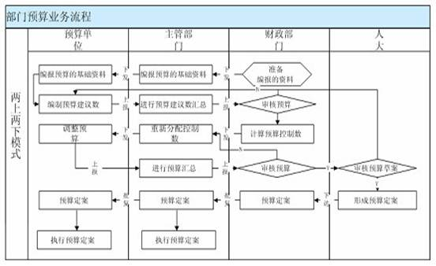

方案概述
金蝶K/3行政事业版是基于Windows DNA（Windows Distributed interNet Application）技术架构的分布式应用系统。金蝶公司1997年开始研究三层结构技术，1998年应用于K/3系列产品的研发，1999年5月推出业界第一个真正三层结构的管理软件。10年的潜心研究和大量的客户验证，现在三层结构技术在金蝶K/3系统中的应用已经成熟、稳定。金蝶K/3行政事业版依托Windows DNA及金蝶BOS平台技术、基于SOA的组件设计思想，以用户的实际业务为核心，全面满足预算、计划、支付、总账、报表、工资、资金、资产、资源等管理要求，提供了一整套全面满足行政事业单位用户应用要求的公共管理软件系统。
金蝶K/3行政事业版是在业界最成熟的金蝶BOS技术平台上构建，专门为行政事业单位量身定制的预算财务综合管理业务系统。系统提供预算、计划、支付、总账、报表、工资、资金、资产、资源等业务管理功能，全面满足行政事业单位和农村三资管理业务应用。金蝶K/3行政事业版帮助行政事业单位全面实现业务管理信息化，提升业务管理水平，方便决策，全面适应政府服务职能转变和满足公共管理要求，具有强化管理、安全性高、通用性强、界面友好、简单易用等特点，同时具有对运行环境要求低、可快速投入使用、极大节省用户投资的优势。
整体应用架构
一个平台、三大支撑、多个子系统
一个平台：系统基于金蝶BOS平台构建，可以根据用户要求个性化定制，业务扩展灵活，系统实现了对门户、公共服务与决策以及异构系统数据交换的强有力支撑，全面满足异构系统无缝集成及信息共享要求。
三大支撑：一是支撑系统门户，二是支撑数据交互，系统支撑与部门预算、集中支付、决策报表、资产清查、财务审计的数据交互；三是具备监督预警、信息公开、决策分析功能，支撑公共服务与决策。
多个子系统：K/3行政事业版针对行政事业单位业务应用特点，全面满足其预算、计划、支付、总账、报表、工资、资金、资产、资源等管理要求，提供了多个子系统。
解决方案
部门预算财务应用：
针对单体核算单位，提供财务核算解决方案；
针对“校财局管”、“院财局管”等管理模式，提供预算财务集中管理解决方案；
县级财政业务应用；
提供“乡财县管”解决方案；
农村三资管理应用；
针对农村资产、资金、资源管理，提供农村“三资管理”专项解决方案；
典型应用
1、预算管理
系统主要实现输入（导入）预算指标、追加（核减）预算指标、用款计划管理、预算执行情况分析、开预算拨款凭证、由预算拨款凭证生成记账凭证等功能。
可以根据“两上两下”、一上一下、三上三下灵活实现业务模式流程部署。

2、票据管理
系统主要实现票据入库、领用、作废、使用、核销、票据使用情况查询等功能。
1.控制票据的领用、发出、核销这一系列流程，产生并提供各种票据使用报表，使得票据管理有序可控、规范管理。
2.准确实时的票据库存报表，可以及时准确掌握票证库存数量。
3.提供票据领用、发出、核销的月报表，便于文档整理。
4.提供票据收发总账和发出核销结存明细分类账，取代了手工登账的工作，减少工作量，防止出现登账错误，保证账目清楚，账账相符。
5.票据的领用、发出、核销使用会计凭证管理，使得总账更有据可循。
3、账务管理
对单位的财务进行管理，除可进行日常发生的收支凭证处理、银行对账、单位对账、财务报表查询等管理外，系统还可以与工资、固定资产等其他系统模块进行连用，实现对其他系统发生
业务的凭证处理和记账工作。
1.初始化准备
科目
a、系统出厂时已按《村集体经济组织会计制度》的要求预设了一套科目表；
b、各单位的会计科目是相互独立的，各单位可以按自已的需要设置符合自己业务特点的明细科目，但其一级科目必须系统管理员来统一管理，以保证整个代理中心的财务核算口径统一；
c、系统预设了常用核算项目，单位可根据自身需求设置核算项目并设置科目与核算项目的关联。
币别
默认人民币
凭证字
系统预设记字凭证，用户也可以自行维护
核算项目管理
a、系统默认置入的辅助项包括：往来单位、部门、职员、支出功能分类、支出经济分类几类；
b、各单位的核算项目是相互独立的，各单位可以按自已的需要设置符合自己业务特点的核算项目；
c、对应收款、内部往来、应付款科目系统已预设了往来单位做为核算项目，用户在实际会计核算中需要将往来单位的信息进行录入。
科目余额始化数录入
提供科目的期初数据管理和初始数据的录入功能。
2.日常工作
凭证管理
凭证是总账系统中用于记录业务信息的基本单据，等同于手工业务操作中的记账凭证。
a、凭证录入支持全键盘操作；
b、多纬度凭证查询：凭证查询支持按会计分录中所有字段查询排序；
c、凭证审核、批量审核、过账、批量过账；及反向操作
d、凭证附件管理；
e、凭证模板管理；
f、 凭证打印：支持普通打印、套打以及汇总打印。
g、凭证汇总表查询
账簿管理
a、提供总分类查询
b、提供明细分类账查询；
c、所有账簿均支持包括未过账凭证、无发生不显示等多维度查询；账簿支持打印和引出到EXCEL的功能。
财务报表
a、提供科目余额表查询
b、提供收支明细表查询
c、提供试算平衡表
d、所有财务报表均支持包括未过账凭证、无发生不显示等多维度查询；所有财务报表支持打印和引出到EXCEL的功能。
核算项目管理
系统内置了常用的核算项目，并提供新增、修改、删除等常规操作功能。
3.期末处理
包括年终结转和期末结账：
年终结转
年终结转系统将自动结转收支，故需谨慎处理，建议只年终处理。所有损益类科目的本期余额全部自动转入本年收益科目，自动生成结转损益记账凭证，未分配收益的结转和分配，需用户自行编制凭证。
期末结账
每期期末必须做，是针对某一个期间的业务结束后的一种确认方式，通过期末结账，实现上期账务资料的封存和下期业务的开始。支持反结账。
4、报表管理
系统主要实现报表定义、函数引导输入、报表编制、报表审核、报表上报、报表下发、报表汇总、数据排序、数据透视、汇总分析等功能。电子报表系统与各个模块连用，通过用户自定义的格式进行取数，自动生成需要的报表，包括各下级单位的汇总报表、统计分析表等。
系统主要实现财务汇总功能，包含基础设置、模版定义、合并报表等常用功能。
1. 报表模板
系统预设年度报表模板：资产负债表、收益及收益分配表等报表模板。
2. 报表取数
提供了丰富的取数函数，可从各系统中获取各类型的财务核算数据
通过ACCT、ACCTEXT等取数函数来实现从会计核算系统中取数；
3. 表页管理
提供多表页管理功能，在一张报表上可设置多张表页。
提供表页汇总功能，可以自动把一个报表中不同表页的数据项进行汇总生成新报表，或生成当前报表的最后一张表页。
4. 报表重算
可根据报表数据特点，设置重算方案，批量进行报表的重算。
通过后台代理服务，定时重算报表，满足重算大批量数据报表的要求。
5. 报表审核
可设置若干审核条件对报表进行全方位的审核，确保报表数据的准确性。
5、工资管理
系统主要实现工资录入、工资审核、银行代发、工资统计查询等功能。
1. 工资管理提供工资核算、工资发放、工资费用分配、银行代发等业务处理
2. 工资管理信息系统能及时反映工资动态变化，分别支持行政事业单位工资统一管理、发放或分散管理统一控制、统一核查。
3. 实现的个人所得税计算，提供各类工资管理报表。
6、资金管理
它以账户为核心，以单据为出发点（对核算中心日常发生的资金流入和资金流出进行登记），完成存款、取款、结算、利息管理、账表查询等工作，从而反应核算中心各种不同账户的资金使用情况。
单位机构
单位机构设置纳入本代理服务中心管理的所有被代理单位。如反映本代理中心代管哪几个单位，此功能是整个资金管理流程的开始。
银行账户
银行账户是指设置代理服务中心将各单位资金集中后，对外在银行统一开设的管理各单位日常资金收入和支出的专用银行户头。
银行账户初始数据录入
代理中心的银行账户初始数据的录入，反映代理中心的银行账户初始数据由哪几个单位组成，每个单位的资金初始额是多少。
7、资产管理
系统主要实现建立固定资产卡片项目、录入卡片、变动处理、资产查询等功能。
1. 初始化：提供资产卡片的期初数据管理。
对固定资产业务处理、卡片信息中的基础资料进行统一维护，包含：变动方式类别（系统内置了类别，同时支持单位自行维护新的类别）
2. 卡片处理：资产卡片是固定资产管理系统中用于记录资产信息的基本单据
固定资产新增；
固定资产变动；
固定资产减值准备；
固定资产卡片拆分；
固定资产清理；
固定资产与投资性房地产的转换；
标准卡片引入引出。
3. 固定资产核算处理：
提供对固定资产的新增、减少和变动的业务处理以及进行的折旧计提和费用分摊业务的会计核算处理。固定资产管理系统生成的凭证将自动传递到总账系统，实现财务业务的一体化管理，保证固定资产管理系统和总账系统的数据相符。
4. 设备检修：
记录每一次设备检修的情况，并提供设备检修记录表，供用户从不同角度查询设备检修情况。
部分客户
中央部委
中华人民共和国国务院国有资产管理委员会
中华人民共和国海关总署
中华人民共和国国家统计局
中华人民共和国民政部
中华人民共和国监察部
中华人民共和国水利部
中华人民共和国农业部
中华人民共和国浙江海事局
中华人民共和国深圳海事局
中华人民共和国冶金地质总局
国家信访局
国家质量监督检验检疫总局
国家环保总局
国家外汇管理局中央外汇业务管理中心
中国人民银行清算中心
财政
江苏省江都市财政局
江苏苏州市财政局
福建省福州市财政局
河北省邯郸市财政局
新疆维吾尔自治区乌鲁木齐市财政局
湖南长沙市岳麓区财政局
广东省东莞市樟木头财政局
湖北省武汉市~口区财政局
税务
湖南省地方税务局
江苏省地方税务局
甘肃省地方税务局
云南省地方税务局
工商
四川省工商局
四川成都市工商行政管理局
广东省工商局
湖南省工商局
教育
山东省教育厅
山东青岛市教育
云南建水县教育局
交通
北京市交通运输管理委员会
湖南省交通运输管理委员会
湖南长沙市交通运输管理委员会
河北省交通运输管理委员会
广东省交通运输管理委员会
深圳市交通运输管理委员会
社保
天津市社会保险基金管理中心
深圳市劳动和社会保险监察处
武汉市东西湖区劳动和社会保障局
民政
湖南省民政厅
深圳市民政局
上海闵行区民政局
其他客户
云南省国家安全厅
昆明市国家安全局
上海市嘉定区审计局
重庆市审计局
昆明市审计局
湖南省文化厅
河南省司法厅
重庆市高级人民法院
广东省国土资源厅
广东省食品药品监督管理局
上海市金山区机关事务管理局
上海市金山区环境保护局
广东省人口和计划生育委员会
广东佛山市南海区公有资产管理委员会
山西晋城市广播电视局
昆明海关
新疆建设管理局昌吉管理处